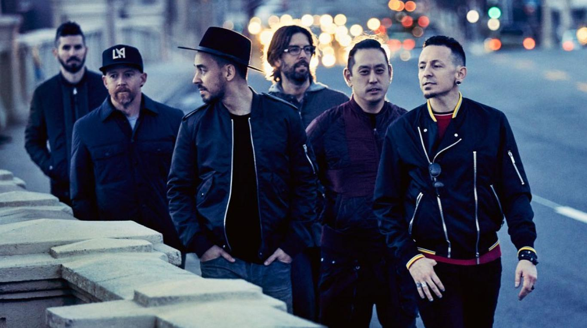

Linkin Park es una banda estadounidense de Nu Metal y Rock alternativo procedente de Agoura Hills, California.
Se formó en 1997. Integrada por Mike Shinoda, Dave Farrell, Joe Hahn, Brad Delson, Rob Bourdon y Chester
Bennington, este último como voz principal. La banda comenzó con sus primeros trabajos musicales de manera
independiente, en la que grabaron su primer material, llamado Xero; sin embargo, no tuvieron éxito en la
búsqueda de un sello discográfico, ya que nadie mostraba interés por su trabajo. Fue hasta 1999, que con el
apoyo de Jeff Blue, el entonces vicepresidente de Warner Records, lograron firmar su primer contrato. El nombre
del grupo es un juego de palabras que hace referencia al Lincoln Park en Santa Mónica.
En octubre de 2000, el grupo lanzó su álbum debut, titulado Hybrid Theory, en el que se encuentran sencillos
populares como «Crawling», «Papercut», «In the End» y «One Step Closer»; los últimos dos obtuvieron
certificación de disco de oro en Australia. Hybrid Theory que alcanzó el puesto número dos en el
Billboard 200, fue el séptimo álbum más vendido de la década del 2000, y fue certificado con disco de diamante
en los Estados Unidos y múltiple disco de platino en Europa. El cuarto sencillo del álbum, «In the End», alcanzó
su mayor posición al situarse en el segundo puesto de la lista Billboard Hot 100.

En marzo de 2003, salió al mercado su segundo álbum de estudio, Meteora. Solo en las primeras semanas logró
ventas de 810 000 unidades, el álbum entró en el Billboard 200 en el puesto número uno, y se convirtió en el tercer
disco más vendido del año. De este disco surgieron canciones como «Somewhere I Belong» y «Numb»; esta última recibió
un disco de oro en los Estados Unidos y Australia. Ese mismo año, MTV2 nombró a Linkin Park como la sexta «mejor
banda en la era del vídeo musical» y la tercera «mejor banda del nuevo milenio», detrás de Oasis y Coldplay.
Asimismo, Billboard ubicó al grupo en el puesto diecinueve de los mejores artistas de la década. En noviembre de ese
mismo año, la banda lanzó su primer álbum en directo, titulado Live in Texas, que grabaron en el Reliant Stadium, en
Houston, Texas.El disco obtuvo múltiples certificaciones de oro en Alemania, Nueva Zelanda, Reino Unido y
Austria.Posteriormente, en 2008, lanzaron otro álbum en vivo, Road to Revolution: Live at Milton Keynes.
Después de Meteora, la banda pospuso por un par de años su siguiente material discográfico, y en ese lapso algunos
integrantes emprendieron proyectos alternos. La banda también lanzó dos álbumes de remezcla certificados entre ese
par de años, Reanimation (2002) y Collision Course (2004), este último con colaboración del rapero Jay-Z en la
canción «Numb/Encore». Dicho sencillo recibió certificación en los premios Grammy de 2006.
El grupo es conocido por su estilo musical característico que mezcla de rock, rap y sonidos electrónicos, si bien
desde sus inicios se le consideró como nu metal, hasta lo que fue su segundo álbum Meteora, en ese entonces decidió
por este género y por el rap metal, no obstante, en su tercer disco Minutes to Midnight volvieron a explorar en otros
géneros, en el que se eligió un estilo más «suave», orientado al rock alternativo. Posteriormente con su disco A
Thousand Suns registraron un estilo mucho más experimental, dicha producción se convirtió en el cuarto álbum
consecutivo de la banda en alcanzar el número uno en las listas de popularidad en su primera semana de ventas. La
banda ha vendido 100 millones de discos y obtuvo dos premios Grammy.
Los primeros años de la banda se remontan a un pequeño estudio del vocalista Mike Shinoda donde se reunían él, un
amigo y compañero de colegio Agoura High School, Brad Delson, en la que grabaron un primer material a modo garage en
1995. Los dos estaban en el mismo instituto, donde conocieron a Rob Bourdon, (actual baterista de la banda). Más
adelante, cuando tomaron el tema de la banda de forma «seria», Shinoda contactó con Joe Hahn que estudiaba en el Art
Center College de Pasadena. La agrupación se formó inicialmente en Los Ángeles y comenzó en 1996 con una mezcla de
géneros musicales como nu metal, hardcore y hip hop. Después de haberse graduado de la secundaria, los jóvenes
californianos Mike Shinoda, Rob Bourdon y Brad Delson tomaron mayor participación en el grupo, y poco después, se unió
Joe Hahn y Dave Farrell (apodado «Phoenix») de manera comprometida ese mismo año. El grupo se formó con cinco
integrantes y para completar la formación, invitaron a participar a Mark Wakefield como vocalista principal, y aunque
con limitaciones financieramente, grabaron su primer material en ese mismo año en un estudio improvisado propiedad de
Mike Shinoda bajo el nombre «Xero». Sin embargo, no lograron obtener un contrato, por lo que el proyecto no prosperó,
sucesivamente Wakefield, al sentirse frustrado, decidió abandonar la formación para proseguir con sus estudios.
Debido a que Wakefield declinó el proyecto, Shinoda se vio en la necesidad de contratar un nuevo vocalista, de entre
los solicitantes destacó Chester Bennington, un joven originario de Phoenix, Arizona, el cual formó parte del grupo
Grey Daze hasta 1998, y en la que adquirió su experiencia con la grabaciones de discos desde los 16 años. Shinoda le
hizo llegar algunas canciones interpretadas por el vocalista anterior y versiones instrumentales, para que él grabara
su voz sobre las últimas. Una vez finalizado el trabajo, Bennington contactó a Shinoda vía telefónica para mostrarle
su propia grabación, los integrantes estuvieron sorprendidos por su voz, por lo que decidieron convocarlo a una
reunión inmediatamente.

Tras la integración de Chester, el grupo pasó a llamarse Hybrid Theory, sucesivamente trabajó bajo su sello
independiente, y en la que grabó el álbum Hybrid Theory EP. Pero debido a problemas legales con un grupo europeo
llamado «Hybrid», fueron forzados a cambiar de nombre nuevamente, el nuevo vocalista sugirió «Lincoln Park» (en honor
al parque de Lincoln Park, situado en Santa Mónica), pero debido al dominio «lincolnpark.com» modificaron la
ortografía a Linkin Park, su actual nombre. El bajista Dave Farrell tuvo que dejar la formación de manera temporal,
ya que previamente tenía un compromiso para realizar una serie de presentaciones con otra banda llamada The Snax,
por lo que fue contratado a Kyle Christener, Scott Koziol e Ian Hornbeck como bajistas durante el tiempo que estuvo
ausente. Pese a todos estos cambios el grupo no lograba encontrar cabida en algún sello discográfico, así que Jeff
Blue, en aquel entonces vicepresidente de Warner Records, apoyó a la joven banda y después de constantes rechazos,
lograron firmar su primer contrato en 1999.
El 24 de octubre de 2000 se publicó el primer álbum como Linkin Park llamado Hybrid Theory, producto de medio año de
trabajo, el álbum fue editado por Don Gilmore. Hybrid Theory tuvo una recepción comercial positiva, en la que vendió
5 millones de copias durante su año debut, por lo que obtuvo el galardón del «álbum más vendido de 2001». De igual
manera fue el disco más vendido en Estados Unidos y Nueva Zelanda en ese año, con los éxitos de sencillos como
«Crawling», «Papercut», «In the End», «With You», «One Step Closer» y «Points of Authority». Estos dos últimos fueron
utilizados como banda sonora de las películas Drácula 2001, Little Nicky y Valentine. El álbum está compuesto en su
mayoría por temas líricos que tratan los problemas por los que atravesó Chester Bennington durante su adolescencia,
como el divorcio de sus padres, y problemas con el alcohol y las drogas. El disco fue número dos en el Billboard 200,
y alcanzó posiciones importantes en el resto del mundo. Logró vender más de 30 millones de copias a nivel mundial, de
los cuales 10 millones de copias son solo en Estados Unidos, convirtiéndolo en el álbum de mejor venta en el siglo
XXI.
En ese entonces, el grupo recibió invitaciones a festivales de música destacadas, como Ozzfest, el Family Values de
Korn y KROQ Almost Acoustic Christmas. Luego decidieron iniciar su propia gira llamada Projekt Revolution, en la que
participaron artistas invitados como Cypress Hill, Adema, DJ Z-Trip, Xzibit, Mudvayne, Blindside y Snoop Dogg. Un
año más tarde, Linkin Park había realizado más de 320 conciertos. En noviembre de 2001, la banda dio a conocer su
primer DVD titulado Frat Party at the Pankake Festival, en el cual fueron documentadas actuaciones del grupo en sus
conciertos. Dave Farrell se reintegró al grupo y participó en el álbum remezcla Reanimation, grabado durante su gira
en 2000 y puesto en el mercado el 30 de julio de 2002, contiene canciones modificadas de Hybrid Theory EP y Hybrid
Theory. El álbum contó con la participación de numerosos artistas entre los que sobresalen Black Thought, Jonathan
Davis y Aaron Lewis. A pesar de que el disco se hizo de material viejo del grupo, fue premiado con disco de platino
en Estados Unidos donde vendió un millón de copias. En cuanto a Reanimation durante su primera semana, llegó a casi
270 000 copias vendidas y alcanzó el puesto número dos en el Billboard 200.
La banda lanzó una edición especial de su disco Hybrid Theory el 11 de marzo de 2002. Dicho álbum fue galardonado con
un Grammy en 2002, a la mejor interpretación de hard rock por la canción «Crawling». Igualmente fue nominado a otros
dos premios Grammy por mejor artista nuevo y mejor álbum de rock. Además el disco se mantuvo en la RIAA's Top 100
Álbumes, por otro lado la revista Billboard lo ubicó en el puesto número once en la lista de los «200 álbumes más
grandes de la década».
Tras Hybrid Theory y Reanimaton, el grupo continuó con conciertos en Estados Unidos, y al mismo tiempo comenzaron a
trabajar en su próximo material en el autobús de su gira. La banda trabajó casi todo el 2002 y finalmente en
diciembre de ese año se anunció oficialmente la producción de su nuevo disco de estudio llamado Meteora. De acuerdo
con los integrantes, para el nombre del mismo se inspiraron en la región rocosa de Meteora, en Grecia, donde están
construidos numerosos monasterios encima de las piedras.
El productor de Meteora fue una vez más Don Gilmore. El segundo álbum The Making of Meteora, se lanzó mundialmente el
25 de marzo de 2003. La banda vendió 810 000 copias en su primera semana de acuerdo a SoundScan, y fue considerado el
álbum más vendido en la lista Billboard en aquel momento. «Somewhere I Belong», primer sencillo de Meteora, ocupó
el primer puesto de la lista Alternative Songs y en el conteo Mainstream Rock Tracks de Billboard. Para octubre,
Meteora logró vender tres millones de copias. El éxito conseguido le permitió a llevar a cabo un segundo Projekt
Revolution, gira que contó con artistas, como Mudvayne, Blindside y Xzibit, en julio de ese año. Aunque Chester fue
hospitalizado a causa de dolores abdominales, la banda se vio obligada a cancelar doce fechas de su gira por Europa.
Al mes siguiente, la banda Metallica invitó a Linkin Park al Summer Sanitarium Tour en 2003. A finales de ese año
publicaron su álbum en directo titulado Live in Texas, el cual contiene las actuaciones en vivo de la banda en Texas
durante esta gira. A principios de 2004, Linkin Park inició una gira mundial titulada Meteora World Tour que incluyó
a Hoobastank, POD y Story of the Year como grupos de apoyo.
En junio de 2013 lanzaron un nuevo disco: Meteora Tour Edition, que contiene las canciones de álbum Meteora junto con
versiones en vivo que fueron registradas durante el Meteora World Tour y además el DVD Meteora: The Making Of. Su
segunda producción de estudio le otorgó a la banda múltiples reconocimientos entre los cuales están el premio MTV a
mejor video rock por «Somewhere I Belong» y un premio Viewer Choice a «Breaking the Habit», Fue el tercer álbum más
vendido en Estados Unidos durante el año 2003. De igual manera, recibieron importantes premios en 2004 en los Radio
Music Awards en donde fueron galardonados con el premio artista del año y canción del año por «Numb». En 2004, la
banda pasó los primeros meses en conciertos alrededor del globo con motivo del Meteora World Tour antes de llevar a
cabo el tercer Projekt Revolution a finales de julio y principios de septiembre, y que se contó con la presencia de
bandas y solistas como Korn, Snoop Team y The Used.
Después de Meteora, la banda dejó pasar un par de años para lanzar su siguiente material discográfico, lapso que
aprovecharon algunos integrantes para emprender otros proyectos. Bennington colaboró con DJ Lethal e integró su propio
proyecto llamado Dead By Sunrise, banda que publicó su álbum debut Out of Ashes en octubre de 2009. Por su parte,
Shinoda trabajó con la banda británica Depeche Mode. En ese mismo año Linkin Park comenzó a trabajar, junto con el
rapero Jay-Z, en otro álbum de remezclas, Collision Course, que se estrenó en noviembre de 2004 y ocupó el primer
lugar del Billboard 200 al vender 368 000 copias en Estados Unidos. Shinoda también integró su propia banda de rap
llamada Fort Minor como trabajo alterno y, junto con Jay-Z, lanzó en noviembre de 2005 el álbum de estudio The Rising
Tied, que recibió comentarios positivos por parte de la crítica. Durante esa época, la relación entre la banda y la
compañía discográfica Warner Music Group estaba en «punto crítico», debido a disputas financieras y decisiones
presupuestarias de los directivos de la misma, por lo que intentaron abandonar la compañía. En un comunicado, el grupo
declaró: «Sentimos la responsabilidad de tener buena música para nuestros seguidores, desafortunadamente no creemos
que podamos lograrlo efectivamente con la actual Warner Music». Después de meses de disputas, la banda finalmente
llegó a un acuerdo en diciembre de 2005.
Linkin Park también colaboró en distintos eventos de caridad, en gran parte para recaudar fondos en beneficio de las
víctimas del huracán Charley en 2004 y después del huracán Katrina al año siguiente. El grupo donó 75 mil dólares a
la Fundación Special Operations Warrior Foundation en marzo de 2004. También colaboraron en los esfuerzos por ayudar
tras el terremoto de 2004 en el océano Índico y la creación de una nueva organización, Music for Relief, responsable
de recaudar fondos para las víctimas. Por último, participaron en Live 8, una serie de conciertos a beneficio de la
caridad para crear conciencia mundial. Junto con Jay-Z, se presentaron en Filadelfia y Pensilvania ante una audiencia
global. Posteriormente la banda se reuniría nuevamente con el rapero durante la entrega de premios Grammy en 2006, en
la cual «Numb/Encore» ganó el galardón a «mejor colaboración de rap/cantada».
La banda regresó a los estudios de grabación en 2006 para grabar su nuevo material discográfico. El álbum, producido
por Rick Rubin, fue confirmado para ese mismo año, pero se pospuso hasta 2007. Posteriormente, Bennington declaró
que su nueva producción se apartaba de su anterior estilo de nu metal. Warner Records anunció de manera oficial el
tercer álbum de estudio de la banda, titulado Minutes to Midnight, el cual salió al mercado el 14 de mayo de 2007 en
Estados Unidos.
Después de catorce meses de trabajo en el álbum, los miembros del grupo optaron por «perfeccionar» su trabajo mediante
la eliminación de cinco de las diecisiete pistas que se tenían planeadas. El nombre del álbum es una referencia hecha
al reloj del juicio final. El disco vendió más de 623 000 copias en su primera semana y llegó a colocarse en el
Billboard 200.
El primer sencillo, «What I've Done», se lanzó el 3 de abril de 2007 y se estrenó la misma semana en MTV y en Fuse
TV. La canción también se usó como tema principal de la banda sonora de la película Transformers. Después de su
lanzamiento, tuvo buena aceptación y obtuvo el primer puesto en la lista Alternative Songs y en el conteo Mainstream
Rock Tracks de Billboard. A finales de año, la banda ganó el premio artista alternativo favorito en el American
Music Awards. Los siguientes sencillos del disco lanzados en 2007 y 2008 tuvieron una buena aceptación, el tema
«Bleed It Out», una de las pocas canciones del disco que contienen rap, «Shadow of the Day» y «Given up», por último
el quinto sencillo fue «Leave Out All the Rest», una de las tantas baladas melódicas incluidas en el disco, también
es parte de la banda sonora de Crepúsculo lanzada en 2008.
Minutes to Midnight se posicionó número uno en 32 países, en la que logró vender 12 millones de copias, entre esas, 2
millones fueron en Estados Unidos, obtuvo doble disco de platino, y Billboard lo ubicó en el puesto 154 de los «200
mejores álbumes de la década». En julio de 2007, la banda inició una serie de conciertos, entre los cuales incluyó
una actuación en el Live Earth en Japón, de igual manera participó en Download Festival en Donington Park, Inglaterra,
y Edgefest en Toronto, Canadá. El 25 de noviembre de 2008 la banda lanzó su CD/DVD Road To Revolution: Live at
Milton Keynes que contiene las canciones interpretadas el 29 de junio de 2008 en el National Bowl de Milton Keynes,
Inglaterra, como parte de la gira Projekt Revolution de ese año en Europa, en el cual estuvo el rapero Jay-Z para
interpretar las canciones «Numb/Encore» y «Jigga What/Faint», del álbum Collision Course.
En mayo del 2009, la banda formó parte nuevamente de la banda sonora de la película de la saga Transformers. Debido a
ello, se anticipó un sencillo promocional «New Divide» que fue lanzado el 28 de mayo de 2009, tema central para el
filme Transformers: la venganza de los caídos, el sencillo mostró un sonido más electrónico, y con una faceta más
comercial comparada con sus anteriores trabajos.
El enero de 2010, se dio a conocer la canción «Not Alone», que forma parte del álbum Download to Donate to Haiti junto
con otros artistas como Dave Matthews Band, Peter Gabriel, Alanis Morissette, Slash, The All-American Rejects,
Hoobastank, entre otros; producido por la organización Music For Relief, que donó todo el dinero recaudado a las
víctimas del terremoto de Haití de 2010. El 27 de marzo, salió un tráiler de un videojuego titulado Linkin Park: 8
Bit Rebellion!, por el cual, se dio a conocer una nueva canción llamada «Blackbirds», posteriormente el tema fue
puesto como pista adicional para iTunes Deluxe Edition bonus tracks. El juego es un multijugador masivo en línea
basado en la banda, diseñado por ellos mismos y en la que estuvo disponible para iPod Touch, iPhone y iPad, en él se
puede apreciar a los seis integrantes de la banda diseñados en un modo 8 bits. Cada nivel está basado en uno de los
miembros del grupo. Se incluyeron algunos de sus principales temas, tomados de toda su discografía. El videojuego
salió al mercado el 26 de abril de 2010, colocándose en iTunes en el puesto número tres en categoría de «juegos de
acción más vendidos».
Por otra parte, Shinoda diseñó dos camisetas, cuyas ventas de las mismas fueron destinadas a la fundación, con el fin
de brindar apoyo a las sobrevivientes del terremoto y tsunami de Japón ocurrido a principios de 2011. La fundación
publicó Download to Donate: Tsunami Relief Japan, un recopilatorio de canciones cuyos beneficios son destinados a la
organización Save the Children.
En el 2008, Chester anunció en una entrevista para MTV que el cuarto trabajo de estudio sería un «álbum conceptual».
Shinoda dijo en una entrevista al portal web IGN, que el nuevo álbum sería de un «género que revienta», también
mencionó que sería más experimental y de vanguardia. El 7 de julio de 2009, Chester confirmó que Rick Rubin
regresaría como productor en el nuevo álbum. En el Festival MTV Ululame, MTV entrevistó a Chester y comentó que el
nuevo disco de Linkin Park posiblemente estaría en el mercado para junio de 2010.
Fue confirmado el 8 de julio, y se anunció que saldría el 14 de septiembre de 2010 en Estados Unidos. Anteriormente en
la página oficial de la banda se publicó el primer sencillo «The Catalyst», que fue lanzado al mercado el 2 de agosto
del mismo año. En julio de 2010, la empresa desarrolladora de videojuegos Electronic Arts, anunció que el sencillo
formaría parte de la banda sonora del juego Medal of Honor. Sucesivamente, encabezó los gráficos en varios países, en
la que entró de nueva cuenta en Billboard 200, al vender más de 241 000 copias en su primera semana. Debutó en el
puesto dos en Reino Unido y logró vender 46 711 copias, solo superado por el álbum Science & Faith de la banda The
Script.
Para la promoción del disco, la banda inició una gira de conciertos que comenzó en Los Ángeles el 7 de septiembre.
El 5 de octubre de 2010 fue publicado en iTunes el segundo sencillo, «Waiting for the End». Además, un documental
llamado A Thousand Suns: the full experience acerca de la publicación del álbum, el cual estuvo disponible en el
MySpace de la banda. En Francia, llegó a la cuarta posición, que es, sin embargo, inferior a los dos anteriores
álbumes. El tercer sencillo «Burning in the Skies», fue lanzado el 24 de febrero de 2011. Posteriormente el vídeo
musical se estrenó en MTV el 21 de marzo del mismo año, y fue dirigido por Joe Hahn.
Meses más tarde, el 13 de abril, Shinoda confirmó el cuarto sencillo del álbum, «Iridescent». También dijo que habría
otra versión ligeramente más corta de la canción para la banda sonora de la película Transformers: el lado oscuro de
la luna. El vídeo musical fue también dirigido por Joe Hahn y se estrenó el 3 de junio de 2011 en la página web de
MTV y poco más tarde en YouTube. Linkin Park llegó al número ocho en el Billboard Social 50, una lista de los
artistas más activos en las principales redes sociales del mundo. En los gráficos de fin de año, la banda llegó a
número noventa y dos en la lista de artistas principales, así como también alcanzó el número cincuenta y tres en la
lista Billboard 200 y el número siete en la lista de álbumes de rock, no obstante, «The Catalyst» obtuvo la posición
número cuarenta en la lista de canciones de rock, todas pertenecientes a la revista Billboard.
En 2010, iniciaron su gira A Thousand Suns Tour, las primeras en Sudamérica, donde visitaron Argentina y Chile el 7 y
9 de octubre respectivamente. También estuvieron el 11 de octubre en Brasil, donde ya habían tocado por única vez en
2004, durante la gira de Meteora. Igualmente realizaron actuaciones por Europa, Asia y Oceanía. En 2011, el grupo fue
nominado en seis categorías en los premios Billboard: «top dúo/grupo», «álbum de rock», «artista rock», «artista
alternativo», canción alternativa por «Waiting for the End» y «álbum alternativo», pero sin obtener ningún premio al
final.
En junio de 2011, Chester reveló a la revista Kerrang! que Linkin Park había comenzado a trabajar en un nuevo material
para su próximo álbum. El vocalista explicó: «Hemos estado trabajando en un nuevo disco. La música es genial y estamos
mucho más avanzados de lo que esperábamos estar. No hay muchos ruidos, pero hay muchas buenas canciones, probablemente
genere una reacción polarizada. Lo cual me complace, como artista espero una reacción». El cantante agregó que lo
que buscaban en el disco «era hacer frente a temas controversiales, en lugar de [tratar] los asuntos personales» que
se tocaban en sus primeros álbumes de estudio. Añadió que: «nosotros hemos aprendido a escribir canciones y letras
serias, hemos aprendido a tratar con la política, fe y otras cosas».
En marzo de 2012, el vocalista de la banda habló nuevamente para la revista antes mencionada, sobre el nuevo álbum:
«Nos volvimos locos en nuestro anterior disco, A Thousand Suns, fue un disco experimental que por mucho tiempo
polarizó a los seguidores de Linkin Park, pero el grupo es consciente de sus acciones». La banda reveló el 28 de
marzo de 2012 en su página oficial, el primer sencillo del álbum «Burn It Down»; el cual fue lanzado el 16 de abril
del mismo año. Mike Shinoda confirmó el 15 de abril en su blog oficial que el quinto disco titulado Living Things, el
cual fue resultado de la mezcla de todos los sonidos y gustos de cada uno de los miembros de la agrupación, haciendo
referencia a que es la vuelta al «auténtico Hybrid Theory». El álbum se lanzó oficialmente el 26 de junio de 2012
durante la gira Honda Civic Tour.
El sencillo «Castle of Glass» estuvo en colaboración con Electronic Arts para formar parte del videojuego Medal of
Honor: Warfighter, estrenado el 10 de octubre de 2012.
En mayo de 2013, Bennington confirmó su colaboración con la banda Stone Temple Pilots en una serie de presentaciones,
además de grabar el EP High Rise en función como nuevo integrante de la misma; sin embargo, aseguró que Linkin Park
«sigue siendo su prioridad». En álbum fue lanzado el 8 de octubre de 2013, bajo el nombre de Stone Temple Pilots con
Chester Bennington, en la que contiene los sencillos «Out of Time» y «Black Heart». El 29 de octubre del mismo año,
publicó su segundo álbum remix, Recharged, en la que incluyen versiones de su predecesor Living Things.
En marzo de 2014, lanzaron un nuevo sencillo «Guilty All the Same». El tema cuenta con la colaboración de Rakim y es
el primer sencillo de su sexto álbum de estudio, The Hunting Party, que se estrenó el 17 de junio. El 30 de mayo, el
grupo durante un concierto en Rock in Rio, lanzó algunos CD de The Hunting Party y con esto, los asistentes que fueron
al concierto publicaron en internet el sencillo titulado «Wastelands», que luego la banda en su página oficial
publicaría, convirtiéndose en tercer sencillo del álbum.
El 20 de octubre de 2015 anunció la compañía Blizzard Entertainment que en conjunto con Linkin Park estaría
presentándose en la ceremonia de clausura BlizzCon de ese año, convención sobre videojuegos de estreno. Sólo unos
días después, el 3 de junio, la banda lanzó a través de su canal de YouTube la canción «Rebellion», que cuenta con la
colaboración de Daron Malakian guitarrista de la banda System of a Down.
Linkin Park comenzó a trabajar en material para un nuevo álbum en noviembre de 2015. En septiembre de 2016,
Bennington declaró: «Tenemos un montón de buen material que espero que desafíe a nuestra base de fanes, así como que
los inspire tanto como nos inspira a nosotros». A principios de 2017, durante una sesión de preguntas y respuestas,
Shinoda reveló que el álbum sonaría distinto a trabajos anteriores de la banda: «Tienen que esperar lo inesperado».
El guitarrista Brad Delson opinó: «Hemos hecho tantos álbumes que sabemos con claridad cómo hacer uno, y
definitivamente no tomamos el camino fácil con este». El primer sencillo del álbum se titula «Heavy», se publicó el
16 de febrero de 2017 y contó con la colaboración de la cantante de pop Kiiara. Como había hecho antes, la banda
publicó mensajes enigmáticos sobre la publicación del nuevo disco; la portada fue revelada a través de puzles
digitales en las redes sociales.
Pocos meses más tarde, el 20 de julio de 2017, Bennington fue hallado muerto en su domicilio en Palos Verdes, Los
Ángeles. Las autoridades revelaron que la causa fue suicidio por ahorcamiento. Después de la confirmación del
suceso, Shinoda lamentó la muerte de su amigo y compañero mediante un mensaje en Twitter. El músico confesó sentirse
con el «corazón roto» por la noticia.
El 22 de agosto de 2017, por medio de las redes sociales, la banda confirmó que se realizaría un acto público especial
en la ciudad de Los Ángeles con el motivo de honrar a Bennington.
El concierto tributo a Chester Bennington se realizó el 27 de octubre de 2017, en el Hollywood Bowl, Los Ángeles.
Entre los artistas invitados estuvieron Jonathan Davis, Ryan Key, M. Shadows, Synyster Gates, Oliver Sykes, Blink-182,
Daron Malakian, Shavo Odadjian, No Doubt (sin Gwen Stefani), Kiiara, Takahiro Morita, Alanis Morissette, Steve Aoki,
Jeremy McKinnon, Zedd, Machine Gun Kelly, Gavin Rossdale, Bebe Rexha, Julia Michaels, Steven McKellar y Echosmith,
junto a los cinco miembros restantes de Linkin Park, que interpretaron varios de los éxitos populares de la banda.
La banda estuvo en pausa entre el 2017 y 2020 por el fallecimiento de Chester Bennington.
Durante un chat en vivo de Instagram el 17 de diciembre de 2017, se le preguntó a Shinoda si Linkin Park actuaría con
una versión de holograma de Bennington en el futuro y respondió: «¿No podemos hacer un Chester holográfico? Ni
siquiera puedo entenderlo. La idea de un Chester holográfico. De hecho, he oído a otras personas fuera de la banda
sugerir eso, y no hay absolutamente ninguna manera. No puedo joder con eso».
El 28 de enero de 2018, Shinoda respondió a un tuit de un fanático que preguntaba sobre su futuro con Linkin Park, y
escribió: «Tengo toda la intención de continuar con LP, y los muchachos sienten lo mismo. Tenemos mucho que
reconstruir, y preguntas para responder, así que llevará tiempo». Sin embargo, el 29 de marzo de 2018, Shinoda
declaró que no estaba seguro del futuro de Linkin Park cuando Vulture lo entrevistó.
El 15 de abril del 2019 Yonhap News hizo una entrevista a Joe Hahn en la cuál le preguntaron: «¿Volverá Linkin Park?»
A lo que Joe respondió: «¿Tal vez en unos 10 años? (Risas) Puede que sea antes, no quiero poner una fecha límite. Solo
queremos centrarnos en el presente y hablar de música. No estamos hablando de planes detallados, solo quiero volver a
esos días en los que hacía música en el garaje».
Después de su publicación, Hybrid Theory fue muy apreciado por su estilo innovador y siendo pieza clave para marcar la
popularidad de nu metal. Su sucesor, Meteora, cuenta con un estilo similar, por ello ha sido descrito como la
continuación del primer disco. Tanto Hybrid Theory como Meteora tuvieron un sonido metal alternativo y rap metal, con
pequeñas influencias del rock industrial, elementos de hip hop y rock alternativo, utilizando programadores y
sintetizadores. En este último la revista Rolling Stone describió a la canción «Breaking the Habit» como
«arriesgada y hermosa». En el álbum de remezclas Reanimation la banda muestra un sonido de rap alternativo,
utilizando muchos más sonidos electrónicos y menos guitarras, convirtiendo muchas canciones en temas íntegros de hip
hop. En Collision Course se puede escuchar un sonido de hardcore y pop rap, debido a que lo grabaron junto con el
rapero Jay Z. En el álbum Minutes to Midnight, la banda experimentó un cambio radical en su sonido representando un
alejamiento del rap rock, ya que en este álbum solo dos canciones cuentan con rap y la mayoría del álbum se consideran
como rock alternativo. Por otro lado la revista NME criticó el enfoque de la banda diciendo que Minutes to Midnight
es «el sonido de una banda con intentos y fracasos por forjar una nueva identidad». En la reseña del disco en
Allmusic, Stephen Thomas Erlewine comentó que la banda suena «tensa y nerviosa», y crean un rap rock sin la malicia de
Limp Bizkit, el periódico Los Angeles Times los comparó con los trabajos de U2.
El uso de dos tipos de canto en Linkin Park generó una característica particular de la música. La interpretación de la
voz entre Chester Bennington (quien fungió como voz principal) y Mike Shinoda (vocalista rap) son parte importante
dentro de la música de Linkin Park, sin embargo, en el tercer disco, Shinoda canta como voz principal en la canción
«In Between», «Hands Held High» y «No Roads Left», por otro lado en su siguiente disco A Thousand Suns en cuatro
canciones del mismo, tanto Bennington como Shinoda cantan. En su mayoría los temas del disco, la banda utiliza
principalmente tambores electrónicos y un sonido más industrial. A diferencia de sus producciones anteriores, el
álbum ha sido considerado como un punto de inflexión en la carrera musical de la banda de acuerdo a los críticos.
James Mongomery de MTV comparó el disco con Kid A de Radiohead. Musicalmente la banda ha recibido influencias de
otros grupos y cantantes. Mike Shinoda en una ocasión explicó que él y otros miembros del grupo han recibido gran
influencia por parte de Chuck D y del grupo Public Enemy, Shinoda declaró: «Public Enemy está muy en tres dimensiones
y a pesar de que parecían políticos, hubo también un montón de cosas por ahí que también me hizo pensar en lo
tridimensional y así quisimos que fuera nuestro registro, sin imitarlos, por supuesto, y demostrar que estamos en
forma creativa».
El grupo se ha caracterizado desde sus inicios por interpretar sus canciones con diversos temas que abarcan diferentes
aspectos desde lo personal hasta lo social. En su mayor parte temas líricos que se refieren a los sentimientos, y
conflictos sociales. La banda ha hablado acerca de diversas cuestiones, y los cambios en el trayecto de su
discografía. Hybrid Theory y Meteora hablan principalmente acerca de conflictos en las relaciones, desórdenes internos
y problemas personales. El álbum Minutes to Midnight es generalmente mucho más «oscuro», tal y como lo indica el
nombre del mismo. En primer lugar, aborda el ámbito político: Mike Shinoda se expresó de manera personal sobre la
guerra en Irak con la canción «Hands held high», y la canción de cierre, «The Little Things Give You Away», hace
referencia al huracán Katrina que golpeó a Nueva Orleans en el año 2005. Del mismo modo, el video musical de la
canción «What I've Done» muestra imágenes de Gandhi, Hitler, Mao Tse Tung, Fidel Castro, entre otras personalidades
destacadas de la historia, en él se aborda el tema de guerras, motines, las pruebas de destrucción nuclear, medio
ambiente y la hambruna. «Shadow of the Day» se basa también en los disturbios públicos y la muerte de inocentes. Su
disco A Thousand Suns trata temas que tienen que ver con la guerra nuclear, «el concepto de este álbum es acerca de
una guerra nuclear y en general cualquier tipo de guerra. En esta producción, se mezcla el concepto de las ideas
humanas con la tecnología, es decir, los miedos que tienen los humanos con imaginar lo que va a suceder con el mundo
en el futuro», declaró Mike Shinoda en una entrevista en MTV. El nombre del disco es una referencia a la explosión de
una bomba atómica. Cabe citar que el grupo destaca por la razón de que hay pocos insultos en sus letras. Sin embargo,
Minutes To Midnight y A Thousand Suns seguían marcados con la etiqueta de Parental Advisory por palabras que son
consideradas como inadecuadas.
Fuentes: IMDb, About.